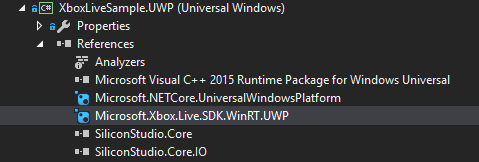
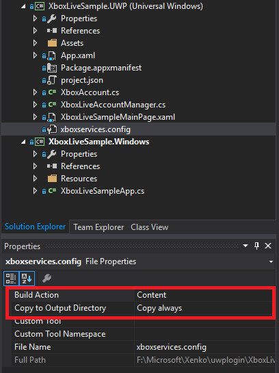
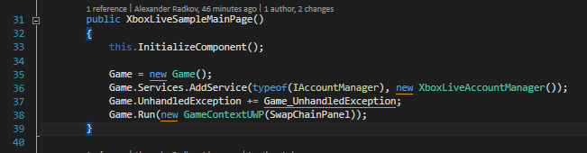
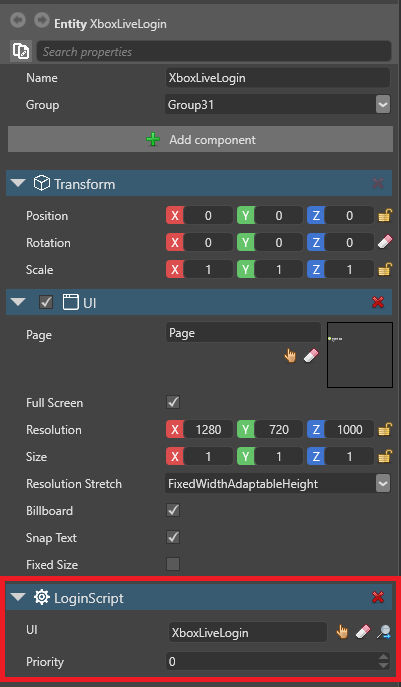

Xbox Live
このページでは、Xbox Live で動作するようにプロジェクトを構成する方法について説明します。
1. 始める前に
プロジェクトがプラットフォームとして UWP を使用するように設定します。そのためには、次のいずれかのようにします。
- プロジェクトを作成し、プラットフォームとして UWP を選択します
- または、既存のプロジェクトにプラットフォームとして UWP を追加します
Tip
このチュートリアルでは、新しいプロジェクトを作成してプロセスをテストした後、その知識を既存のプロジェクトに応用することをお勧めします。
UWP からプロジェクトを実行できることを確認します。そのためには、［ソリューション プラットフォーム］ドロップダウン リストで目的のプラットフォーム (UWP-64、UWP-32、または UWP-ARM) を選択して、プロジェクトを実行します。
Xbox Live SDK をダウンロードします。
このページを書くときは、XboxLiveSDK-1612-20170114-002 を使用しました。サンプルは、Xbox Live SDK の Achievements サンプルに基づいていますが、厳密ではありません。
Xbox Live の環境を変更します。［SDK］フォルダーの［Tools］で以下を実行します。
SwitchSandbox.cmd XDKS.1XDKS.1 は、Microsoft のサンプルに使用されるサンドボックスです。
Warning
これを行うと、Xbox の通常のアカウントはブロックされて、開発者のアカウントだけが許可されるようになります。元に戻すには、次のコマンドを実行します。
SwitchSandbox.cmd RETAIL開発者アカウントで Achievements サンプルを実行できることを確認します。
2. Xbox Live SDK をソリューションに追加する
Visual Studio で、ゲームのソリューションを開きます。
［パッケージ マネージャー コンソール］を開きます (［ツール］>［NuGet パッケージ マネージャー］> [パッケージ マネージャー コンソール］)。
［既定のプロジェクト］フィールドで、UWP プロジェクト (MyGame.UWP など) を選択します。

コンソールで次のように入力します。
PM > Install-Package Microsoft.Xbox.Live.SDK.WinRT.UWPNuGet パッケージがプロジェクトに追加されます。
パッケージが［参照］の一覧に表示されることを確認します。

3. UWP プロジェクトを構成する
MyGame.UWP.TemporaryKey.pfx を削除します。
xboxservices.config をプロジェクトに追加します。
このファイルは、テスト用に Xbox Live SDK サンプル (Achievements サンプルなど) から入手できます。ゲームを公開するときは、タイトル ID とサービス構成 ID を実際のプロジェクトのものに変更します。詳細については、Xbox Live のドキュメントを参照してください。
xboxservices.config のプロパティで、［ビルド アクション］の［コンテンツ］を選択し、［出力ディレクトリにコピー］の［常にコピーする］を選択します。

Package.appxmanifest をプロジェクトの詳細に合わせて編集します。
マニフェスト ファイルは、テスト用に Xbox Live SDK サンプル (Achievements サンプルなど) から使用できます。ゲームをストア アプリと関連付ける場合は、生成されたマニフェスト ファイルを使用します。詳細については、Xbox Live のドキュメントを参照してください。
InternetClientServer の機能が有効になっていることを確認します。
4. ユーザー アカウント スクリプトをゲームに追加する
Xbox Live SDK を公開することなく、ゲーム プロジェクトで Xbox Live の機能を有効にする必要があります。既に MyGame.UWP が MyGame.Game を参照しているので、ここで参照することはできません。代わりに、インターフェイスを作成し、UWP プロジェクト側から実装することができます。
Note
これを行うには複数の方法があります。ここでは 1 つの方法について説明します。
2 つのインターフェイス
IAccountManagerとIConnectedAccountをゲームに追加します。UWP プロジェクト (MyGame.UWP など) で、インターフェイス
public class XboxAccount : IConnectedAccountおよびpublic class XboxLiveAccountManager : IAccountManagerを実装します。後でゲーム スクリプトからアクセスできるように、アカウント ファクトリをゲームに追加します。
MyGameMainPage.xaml.csに次の行を追加します。Game.Services.AddService(typeof(IAccountManager), new XboxLiveAccountManager());
最終的に、スクリプトは少なくとも次のような内容になります。
public class LoginScript : AsyncScript { private IConnectedAccount account; public override async Task Execute() { var accountMgr = Services.GetServiceAs<IAccountManager>(); account = accountMgr?.CreateConnectedAccount(); if (account == null) return; var result = account.LoginAsync(); // TODO ここにコードを追加する! } }
xbox_live_user 機能および他のクラスをゲームで公開できるようになります。

サンプル プロジェクト
Xbox Live のログイン機能でサンプル プロジェクトをダウンロードします